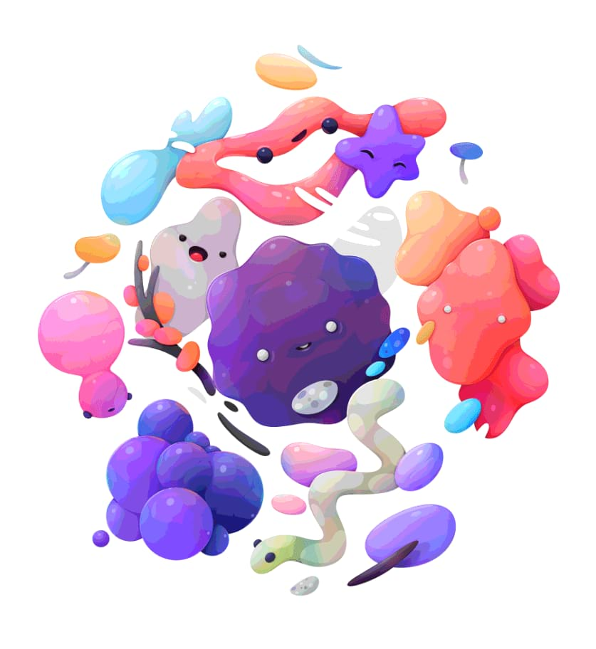

Creates large, flat areas of color or tone in your images.

Before and after adjustment applied.
Settings
The following settings can be adjusted in the dialog:
Posterize Levels—controls the number of colored areas produced and the complexity of the resulting image. Drag the slider to the left to decrease the number of colored areas (thereby simplifying image layout), drag to the right to increase colored areas (thereby giving a more complex image layout).